정역학 한 학기
하중과 평형에서 트러스, 보의 단면력과 영향선까지.
보 위에 하중을 놓으면 휨모멘트도가 다시 그려지고, 트러스의 부재가 인장과 압축으로 물들고, 기둥이 휘청이는 순간을 숫자로 봅니다. 구조역학 MechanicsBook을 시작으로 건설재료, 지반공학, 건축구조, 철근콘크리트, 교량·터널·도로, 시공과 건설관리, BIM과 디지털 건설이 차례로 꽂힐 서가입니다.
1권 공개구조역학 17장
조건에 맞는 책이 없습니다. 다른 검색어나 분야를 선택해 보세요.
질문 하나를 골라 시뮬레이터를 움직여 보세요. 각 실험은 해당 교과서의 그 장면으로 바로 이어집니다.
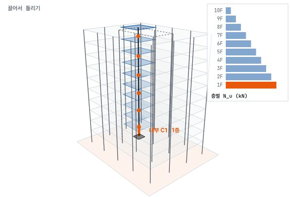
MechanicsBook · 구조역학10층 건물의 무게는 어디로 흘러갈까?3D 건물에서 기둥을 골라 바닥에서 기초까지 쌓이는 하중을 따라갑니다.직접 끌어 보기 →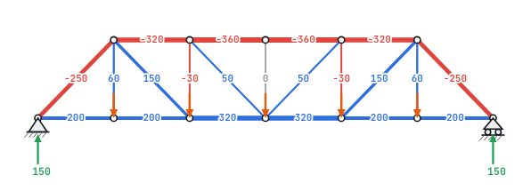
MechanicsBook · 구조역학삼각형 속 어느 부재가 당겨질까?프랫·하우·워런 트러스의 인장과 압축을 색으로 비교합니다.직접 끌어 보기 →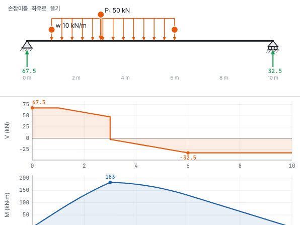
MechanicsBook · 구조역학하중을 옮기면 휨모멘트는 어떻게 바뀔까?집중 하중과 분포 하중을 끌어 놓으면 전단력도와 휨모멘트도가 바로 다시 그려집니다.직접 끌어 보기 →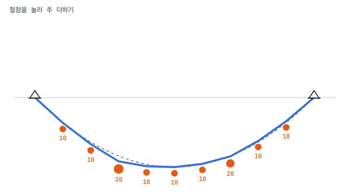
MechanicsBook · 구조역학매단 사슬을 뒤집으면 왜 아치가 될까?하중에 따라 사슬 모양을 만들고 뒤집어 휨이 없는 아치를 얻습니다.직접 끌어 보기 →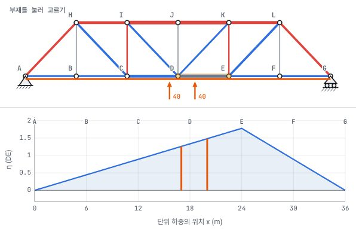
MechanicsBook · 구조역학차가 다리를 건너는 동안 부재는?T-36 위를 지나는 관리 차량과 부재력의 변화를 따라갑니다.직접 끌어 보기 →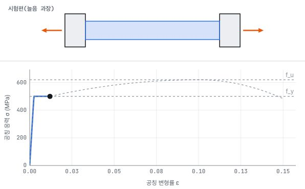
MechanicsBook · 구조역학철근은 어떻게 늘어나다 끊어질까?인장 시험기로 항복과 변형 경화, 네킹을 곡선으로 봅니다.직접 끌어 보기 →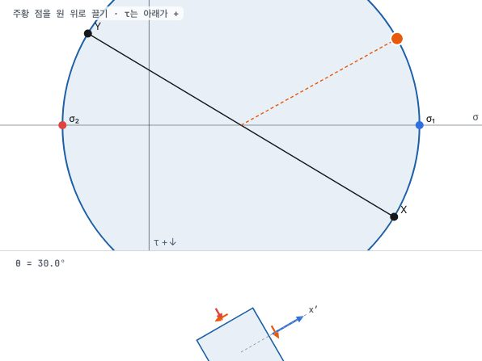
MechanicsBook · 구조역학방향을 바꾸면 응력은 어떻게 변할까?모어 원 위의 점을 끌어 주응력과 최대 전단응력을 읽습니다.직접 끌어 보기 →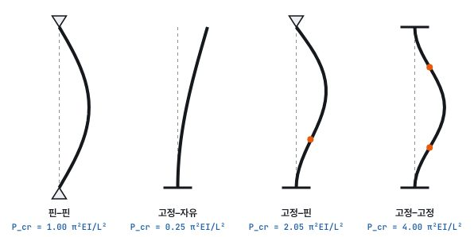
MechanicsBook · 구조역학기둥은 언제 옆으로 휘어 버릴까?지지 조건마다 좌굴 모드와 좌굴 하중을 직접 풀어 봅니다.직접 끌어 보기 →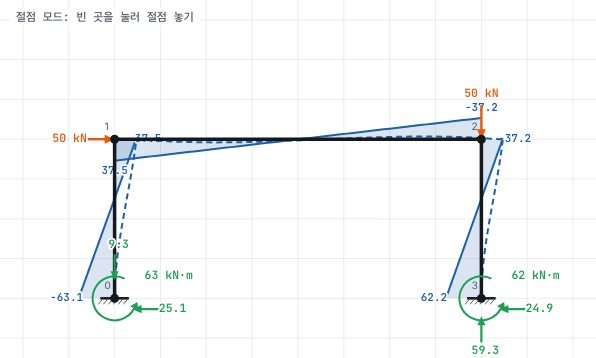
MechanicsBook · 구조역학해석 프로그램은 구조물을 어떻게 풀까?절점과 부재를 클릭해 모델을 만들고 강성법으로 풉니다.직접 끌어 보기 →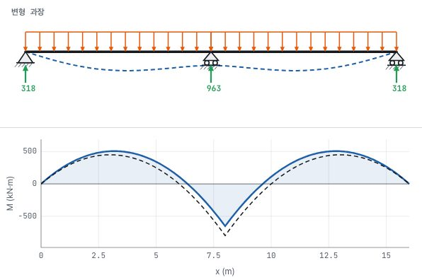
MechanicsBook · 구조역학지점이 내려앉으면 무슨 일이 생길까?하중이 없어도 연속보에 휨모멘트가 생기는 이유를 봅니다.직접 끌어 보기 →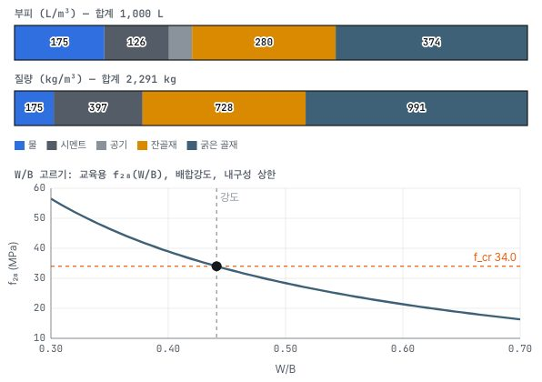
MaterialsBook · 건설재료콘크리트 1 m³는 무엇으로 채울까?강도와 슬럼프를 고르면 물·시멘트·모래·자갈이 절대용적법으로 채워집니다.직접 끌어 보기 →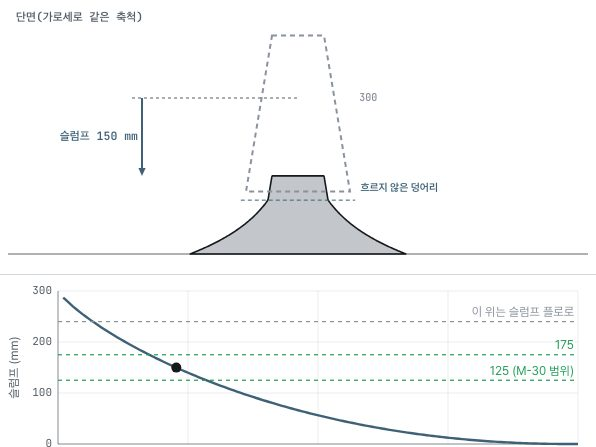
MaterialsBook · 건설재료슬럼프 150은 무슨 뜻일까?항복 응력을 바꾸며 콘을 들어 올리면 콘크리트가 주저앉는 높이가 달라집니다.직접 끌어 보기 →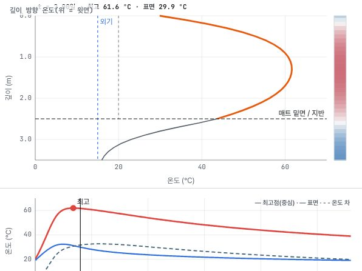
MaterialsBook · 건설재료두꺼운 기초는 왜 속부터 뜨거워질까?B-10 기초 2.5 m의 수화열과 표면·중심 온도 차를 시간에 따라 풉니다.직접 끌어 보기 →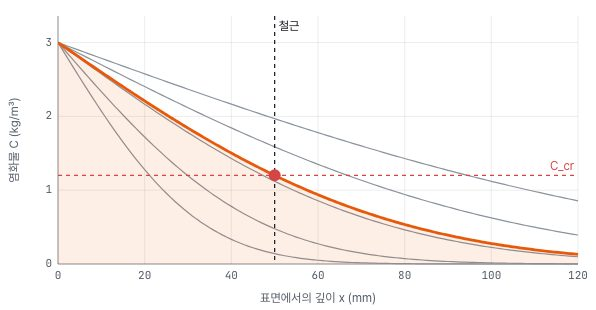
MaterialsBook · 건설재료염화물은 언제 철근에 닿을까?표면 농도와 확산 계수, 피복 두께로 부식이 시작되는 해를 찾습니다.직접 끌어 보기 →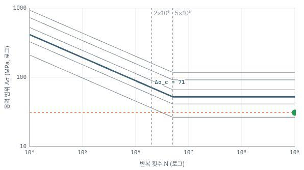
MaterialsBook · 건설재료다리는 몇 번이나 흔들려도 될까?응력 범위와 상세 등급으로 강재의 피로 수명을 계산합니다.직접 끌어 보기 →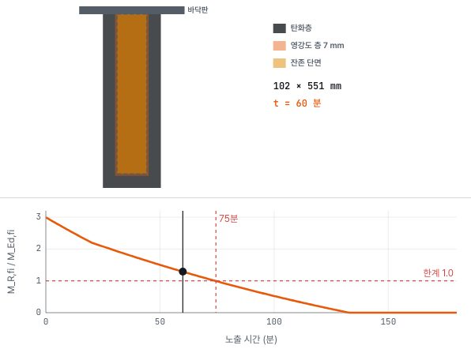
MaterialsBook · 건설재료목재 보는 불 속에서 얼마나 버틸까?탄화층이 파고드는 동안 남은 단면이 견디는 모멘트를 따라갑니다.직접 끌어 보기 →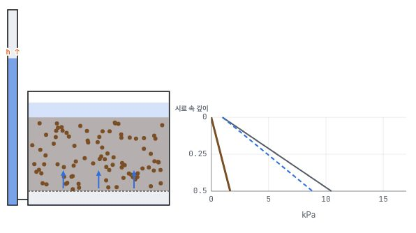
GeotechBook · 지반공학모래는 왜 갑자기 끓어오를까?위로 흐르는 물의 수두를 올리면 유효응력이 0이 되는 순간을 봅니다.직접 끌어 보기 →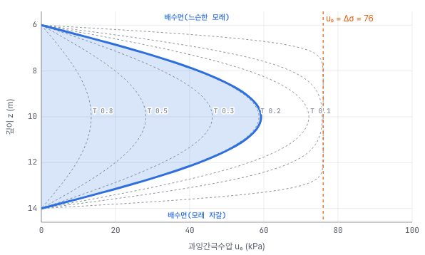
GeotechBook · 지반공학점토는 왜 몇 년에 걸쳐 내려앉을까?시간에 따라 점토층 속 과잉간극수압이 빠져나가는 곡선을 따라갑니다.직접 끌어 보기 →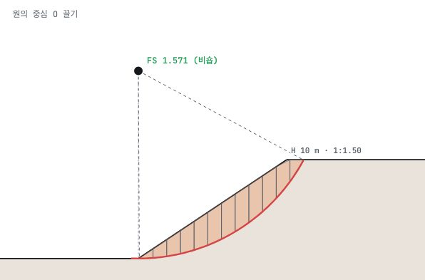
GeotechBook · 지반공학비탈은 어디서 미끄러질까?원호의 중심을 끌며 절편법으로 가장 위험한 활동면을 찾습니다.직접 끌어 보기 →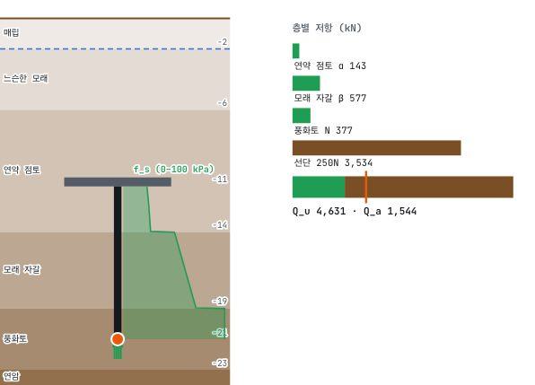
GeotechBook · 지반공학말뚝은 얼마나 깊이 박아야 할까?지층을 지나는 말뚝 끝을 끌어 주면 마찰과 선단 지지력을 쌓습니다.직접 끌어 보기 →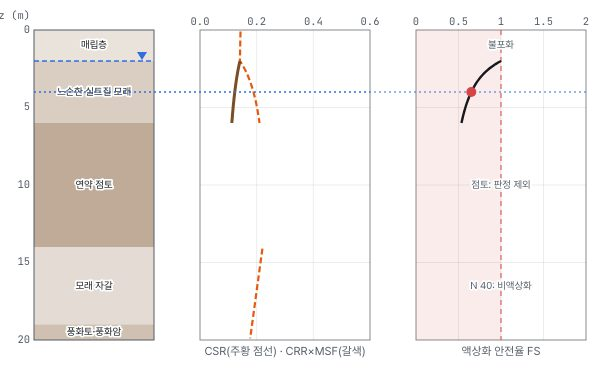
GeotechBook · 지반공학지진이 오면 땅이 녹을까?가속도와 지하수위를 바꾸며 깊이별 액상화 안전율을 봅니다.직접 끌어 보기 →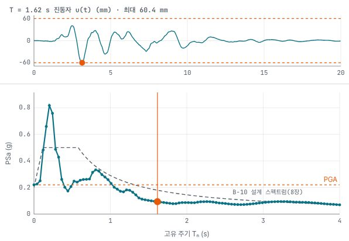
StructureBook · 건축구조지진에 건물은 몇 초 주기로 흔들릴까?지진파를 여러 주기의 건물에 넣어 응답 스펙트럼을 한 점씩 그립니다.직접 끌어 보기 →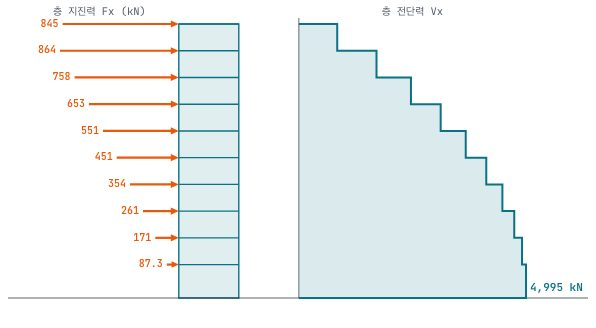
StructureBook · 건축구조10층 건물이 받는 지진력은?반응수정계수와 주기를 바꾸며 밑면 전단력과 층 지진력을 계산합니다.직접 끌어 보기 →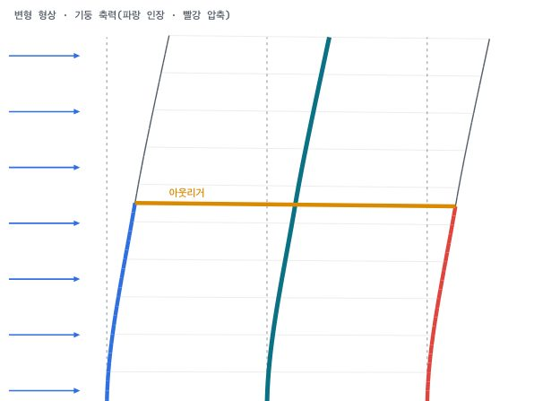
StructureBook · 건축구조아웃리거는 어느 층에 둘까?아웃리거 높이를 옮기며 지붕 변위가 가장 줄어드는 위치를 찾습니다.직접 끌어 보기 →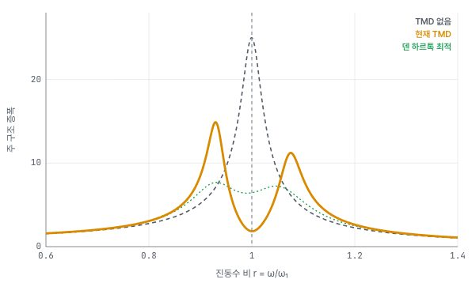
StructureBook · 건축구조추 하나로 흔들림을 줄일 수 있을까?동조 질량 감쇠기의 질량과 진동수를 맞춰 공진을 둘로 가릅니다.직접 끌어 보기 →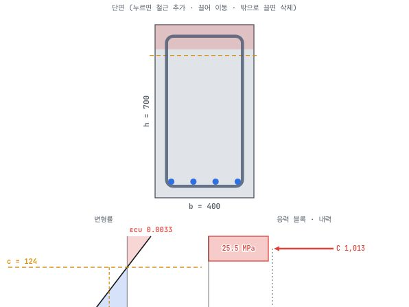
ConcreteBook · 철근콘크리트철근을 몇 개 넣어야 보가 버틸까?단면에 철근을 놓으면 변형률과 응력 블록, 휨강도가 바로 다시 계산됩니다.직접 끌어 보기 →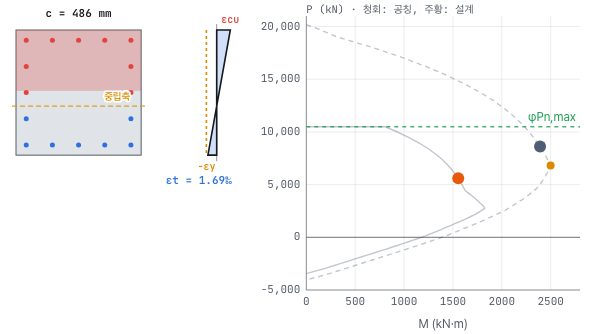
ConcreteBook · 철근콘크리트기둥은 축력과 휨을 얼마나 함께 견딜까?중립축을 옮기며 P–M 상관도를 한 점씩 그립니다.직접 끌어 보기 →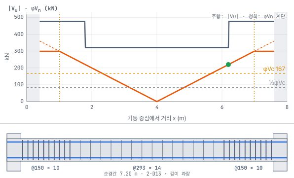
ConcreteBook · 철근콘크리트스터럽은 얼마 간격으로 넣을까?전단력도 위에 콘크리트와 스터럽이 만드는 강도 계단을 그립니다.직접 끌어 보기 →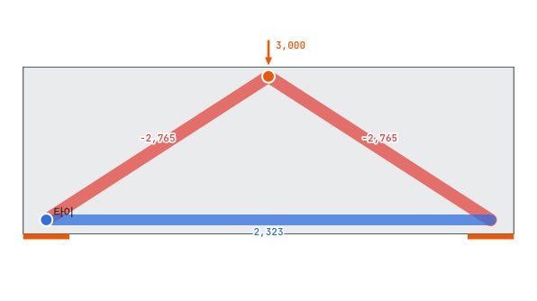
ConcreteBook · 철근콘크리트깊은 보 속 힘은 어디로 흐를까?절점을 끌어 스트럿과 타이로 힘의 흐름을 그려 봅니다.직접 끌어 보기 →처음이라면 구조역학 1장에서 하중이 흐르는 길부터 보세요. 강의 순서대로 읽으려면 아래 묶음을 차례로 따라가면 됩니다.
하중과 평형에서 트러스, 보의 단면력과 영향선까지.
응력과 변형률에서 휨응력, 처짐과 좌굴까지.
부정정 구조를 응력법과 처짐각법으로 풀고, 해석 프로그램 속 강성법을 엽니다.
시멘트와 배합에서 강도·내구성, 강재와 철근까지.
유효응력에서 압밀, 토압과 흙막이, 말뚝까지.
하중과 골조, 바람과 지진, 내진 설계까지.
응력 블록과 보의 휨, 전단, 기둥 P–M 상관도까지.
10층 업무시설의 하중 경로에서 큰보의 휨모멘트, 골조 해석까지 한 건물로 잇습니다.